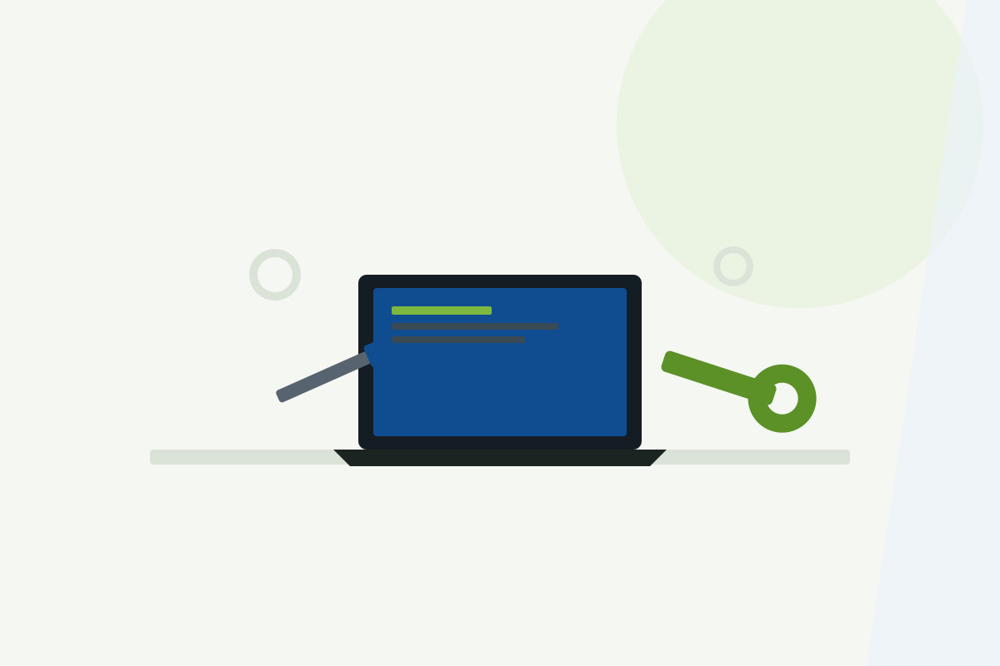
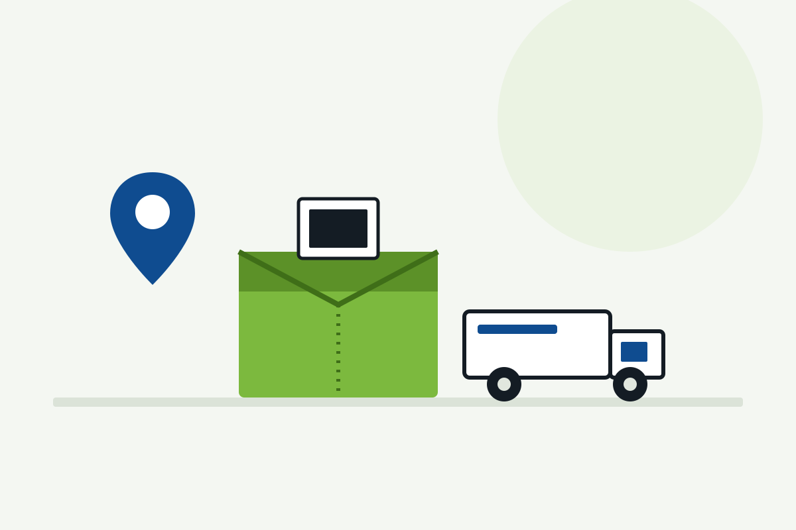

Especialización exclusiva en Acer
Trabajamos únicamente con portátiles y ordenadores de la marca Acer, lo que nos permite conocer bien sus averías más habituales y sus componentes.
Diagnosticamos y reparamos portátiles y ordenadores Acer con problemas de encendido, pantalla, batería, lentitud o conexión Wi-Fi. Aspire, Swift, Predator, Nitro, Spin, TravelMate y Chromebook. Presupuesto claro antes de intervenir y garantía sobre cada reparación.
Servicio técnico independiente. No somos servicio técnico oficial Acer y no gestionamos equipos cubiertos por la garantía del fabricante.
Trabajamos únicamente con portátiles y ordenadores de la marca Acer, lo que nos permite conocer bien sus averías más habituales y sus componentes.
Revisamos tu equipo sin coste y sin compromiso antes de proponerte ninguna reparación.
Las intervenciones realizadas cuentan con garantía según las condiciones del servicio.
Solicita la recogida de tu portátil Acer sin necesidad de desplazarte.

Diagnosticamos y reparamos portátiles y ordenadores Acer con averías electrónicas, mecánicas o de software: Aspire, Swift, Predator, Nitro, Spin, TravelMate y Chromebook. Revisamos el equipo, identificamos el origen del problema y te informamos del presupuesto antes de intervenir.
Estas son algunas de las incidencias que revisamos con más frecuencia en equipos Acer.
El equipo no enciende, se apaga solo o presenta fallos en la fuente de alimentación o cargador.
Pantalla rota, con líneas, sin imagen o con fallos de retroiluminación en portátiles Acer.
Pérdida de autonomía, apagados repentinos o batería degradada que ya no mantiene la carga.
Lentitud general, virus, errores de Windows o necesidad de formateo y reinstalación.
Ventiladores ruidosos, apagados por temperatura o necesidad de cambio de pasta térmica, frecuente en equipos gaming Predator y Nitro.
Problemas de conexión, pérdida de red o errores en el adaptador Wi-Fi.
Antes de reparar tu portátil Acer realizamos un diagnóstico técnico totalmente gratuito y sin compromiso para localizar con precisión la avería.
Solo con el diagnóstico realizado podemos ofrecerte un presupuesto ajustado a la avería real de tu equipo Acer. Tú decides si sigues adelante con la reparación, sin ningún coste por el diagnóstico.
Cuéntanos el modelo de tu portátil Acer y la avería que presenta.
Trae el equipo a nuestras instalaciones o solicita la recogida desde Península.
Revisamos el equipo sin coste y localizamos el origen exacto de la avería.
Te informamos del coste antes de realizar cualquier intervención.
Reparamos el equipo, comprobamos su funcionamiento y te lo entregamos.
Si no puedes acercarte a nuestras instalaciones, solicita la recogida de tu portátil Acer y lo recogemos en cualquier punto de la Península para su diagnóstico gratuito y reparación.
Solicita tu recogida ahora
Consulta las valoraciones publicadas por clientes sobre nuestro servicio y atención.
Visita nuestro canal y descubre contenido técnico sobre reparación de portátiles.
C. de Joaquín María López, 26, 28015 Madrid. Metro Islas Filipinas, Canal y Moncloa. Aparcamiento público en Calle Blasco de Garay 61.
El formulario se envía directamente mediante la Gmail API configurada en Vercel. No abre ningún gestor de correo y no utiliza servicios externos de terceros.
Diagnóstico gratuito. Te informamos del presupuesto de reparación antes de intervenir.
AxerTech está especializado exclusivamente en el servicio técnico y la reparación de portátiles y ordenadores de la marca Acer: Aspire, Swift, Predator, Nitro, Spin, TravelMate y Chromebook.
El diagnóstico técnico es totalmente gratuito y sin compromiso. Solo pagas si decides realizar la reparación.
Sí. Puedes utilizar el botón de solicitud de recogida para gestionar el envío desde cualquier punto de Península.
De lunes a viernes de 09:30 a 18:00. Sábados y domingos permanece cerrada la atención presencial. La atención telefónica y por WhatsApp está disponible 24 horas, 365 días.
No. Somos un servicio técnico independiente y no gestionamos reparaciones cubiertas por la garantía oficial del fabricante.
Sí, las reparaciones realizadas cuentan con garantía sobre la intervención según las condiciones del servicio.
Un portátil Acer que no enciende, va lento o se apaga solo suele tener un origen concreto: un fallo en la fuente de alimentación, una batería degradada o software dañado por virus o mal funcionamiento del sistema. Por eso, antes de sustituir piezas, en AxerTech realizamos un diagnóstico técnico gratuito que permite identificar la causa real de la avería y evitar reparaciones innecesarias.
Otras averías habituales están relacionadas con la pantalla rota o con fallos, el teclado o touchpad dañado, y el sobrecalentamiento por acumulación de polvo o pasta térmica degradada, especialmente en los equipos gaming Predator y Nitro. También ampliamos memoria RAM y sustituimos discos duros por unidades SSD para mejorar el rendimiento de portátiles Aspire, Swift y TravelMate.
Un mantenimiento periódico —limpieza interna, actualización de software y revisión de batería— ayuda a prevenir buena parte de las averías más comunes en portátiles Acer. Si tu equipo presenta cualquiera de estos síntomas, puedes contactar con nuestro servicio técnico en Madrid o solicitar la recogida desde cualquier punto de la Península.